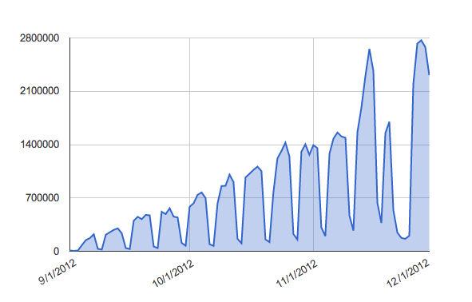

Sharding your
Rails Application
Carol Nichols
@carols10cents
Chris Winters
@cwinters
sharting, v. a portmanteau of 'shit' and 'fart'
Should we mention 'sharding is splitting your database' after the
portmanteau intro? In the vein of "are you sure you're in the right
talk?" No slides, just words...
Sharding
- Why did we do this?
- What did we do?
- Would we do it again?
Think Through Math

Math Problem Attempts 2012 Sept-Nov

Time for above ~ 4 minutes?
Sharding
- Why did we do this?
- What did we do?
- Would we do it again?
Sharding is...
Splitting one database into many
Let me just go in heroku and...
transition speakers carol -> chris?
Sharding types
- Vertical: by function
- Horizontal: by record
Vertical vs horizontal
Preview: one of these is much harder
Key features
- Pain of JOINs felt in functional coupling
- Splitting functionally: initial cost then cheap (in Rails)
Vertical: TTM
I'm skipping math content here. I don't even want to get into it
unless prompted; someone might do so if they want to dive into
JOIN-able data and we MIGHT want to bring it up as the difference
between valid references (like students in shard) and data that
are used (like math content)
Key features
- Pain of JOINs felt in reporting
- Sharding criteria: choose wisely
- Examples: customer, geography (region, state), role
- Beware the easy and obvious answer, read your data!
Horizontal: TTM

Every application is different.
Time for above ~ 10 minutes?
We used db-charmer
- There are alternatives:
- octopus gem
- vertical only: ActiveRecord's establish_connection
...with some customizations
- Rack middleware to cleanup
- RequestStore: implicit shard use
- Coordinating IDs
- Shard associations
Coordinating IDs
- Sequence-per-table: no more
- Solution: all use sequence on master
- Another: GUIDs - no SPF, but not for humans
Shard associations
- db-charmer has no support for associations
- OK: shard-to-master
- NOT: master-to-shard, shard-to-shard
- Solution: explicit wrapper with passthrough for AR
Many other issues
- Migrations: OK, but parallel needed for some
- Tests - factories
- Development: reloading, keep in sync!
- Development: code reloading broke!
Many other issues
- Moving data between shards
- rake db:* expected one db
- NOT: threadsafe
- All your libraries assume one database
Time for above ~ 6 minutes?
Yep, it's difficult
- Always pick a shard
- Infrastructure and tools assume one database
- Examples: rake, monitoring, logging...
do this FAST, no time!
Sharding
- Why did we do this?
- What did we do?
- Would we do it again?
Expected growth happened
Chris do this!
(12/17: 78,171,520 attempts)
(5/24: 458,822,952 attempts)
(12/17 max: 84,332 students/day)
(5/24 max: 129,850 students/day)
(also get number of students)
insert graph here
Database size is now reasonable (x5)
Building now: Data Warehouse
- Benefits: archiving data out of the write-heavy app, faster queries for reporting
- Taking time, so would not have helped in our window
- ... but we need it anyway for better reports.
Would we do it again, with 20/20 hindsight?
No.
Would we do it again, with 20/20 hindsight?
- Normal rails land >>> sharded rails land
- We didn't really need THAT much more ceiling.
- Optimizing and iterating probably would have been enough.
- We didn't have proof the database was the bottleneck
Should you shard your rails app's DB?
- Almost certainly not.
- Never at the beginning!
- Your special snowflakeness will override any technology choices.
- ... Good luck!
Time for above ~ 7 minutes?
←
→
/
#